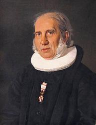
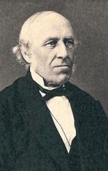
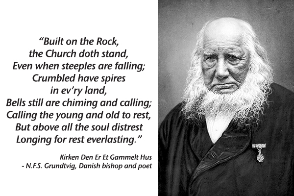

|
|
【建基磐石】 |
|
1 Built on the Rock the Church shall stand 2 Surely in temples made with hands 3 We are God's house of living stones, 4 Here stands the font before our eyes, 5 Grant, then, O God, your will be done, |
|
|
|
|
|
|
|


https://youtu.be/u-SCBy7i2eE -
| Text: | Built on the Rock |
| Author: | Nikolai F. S. Grundtvig |
| Translator: | Carl Doving |
| Tune: | KIRKEN DEN ER ET |
| Composer: | Ludvig M. Lindeman |
| Short Name: | N. F. S. Grundtvig |
| Full Name: | Grundtvig, N. F. S. (Nicolai Frederik Severin), 1783-1872 |
| Birth Year: | 1783 |
| Death Year: | 1872 |
Nicolai Frederik Severin Grundtvig

was the son of a pastor, and was born at Udby, in Seeland, in 1783. He studied in the University of Copenhagen from 1800-1805; and, like some other eminent men, did not greatly distinguish himself; his mind was too active and his imagination too versatile to bear the restraint of the academic course. After leaving the university he took to teaching; first in Langeland, then (1808) in Copenhagen. Here he devoted his attention to poetry, literature, and Northern antiquities. In 1810 he became assistant to his father in a parish in Jutland. The sermon he preached at his ordination, on the subject "Why has the Lord's word disappeared from His house," attracted much attention, which is rarely the case with "probationers'" sermons. On his father's death, in 1813, he returned to Copenhagen, and for eight years devoted himself mainly to literature.
The poetry, both secular and religious, that he produced, drew from a friend the remark that "Kingo's harp had been strung afresh." In 1821 King Frederik vi. appointed him pastor of Prasloe, a parish in Seeland, from which he was the next year removed to Copenhagen, and made chaplain of St. Saviour's church in Christianshavn. From the time of his ordination he had been deeply impressed with Evangelical church sentiments, in opposition to the fashionable Rationalism and Erastianism of the day; and adhered to the anti-rationalist teaching of Hauge, whose death at this time (1824) seemed to be a call to Grundtvig to lift up his voice. An opportunity soon presented itself; Professor Clausen brought out a book entitled Katholicismens og Protestantismens Forfatning, Ldre, og Ritus ("The condition, teaching, and ritual of Catholicism and Protestantism"). This book was replete with the Erastian Rationalism which was so especially distasteful to Grundtvig, who forthwith, in his Kirkens Gjenmsele ("The Church's Reply," 1825), strongly opposed its teaching, and laid down truer principles of Christian belief, and sounder views of the nature of the Church. This caused a sensation: Grandtvig (who had not spared his opponent) was fined 100 rixdollars, and the songs and hymns which he had written for the coming celebration of the tenth centenary of Northern Christianity were forbidden to be used.
On this he resigned his post at St. Saviour's, or rather was forced to quit it by a sentence of suspension which was pronounced in 1826, and under which he was kept for 13 years. He took the opportunity of visiting England in 1829, 30, and 31, and consulting its libraries, mainly with a view to a further insight into Northern antiquities, and to help his studies in the early English tongue. His edition of Cynewulfs beautiful poem of the Phenix from the Codex Exoniensis, the Anglo-Saxon (so-called) text, with a preface in Danish, and a fri Fordanskning (free rendering in Danish), published in 1840*, is a result of this journey and enforced leisure. Tired of his long silence, his numerous friends and admirers proposed to erect a church for him, and form themselves into an independent congregation, but this was not permitted. He was allowed, however, to hold an afternoon service in the German church at Christianshavn. There ho preached for eight years, and compiled and wrote his hymn-book, Sang-Vdrk til den Danske Kirkce ("Song-work for the Danish Church"). He still worked on towards his object of raising the Christian body to which ho belonged from the condition of a mere slate establishment to the dignity of a gospel-teaching national church.
In 1839 (the year of the death of King Frederik vr., and the accession of his cousin Chrisliem vni.) the suspension was removed, and he was appointed chaplain of the hospital Vartou, a position which he held till his death. In 1863 the king (Frederik vn.) conferred on him the honorary title of bishop. The good old man died suddenly, in his 89th year, on Sept. 2, 1872, having officiated the day before. As Kingo is the poet of Easter, and Brorson of Christmas, so Grundtvig is spoken of as the poet of Whitsuntide.
--John Julian, Dictionary of Hymnology,, p. 1001 (1907)
Tune Information
| Title: | KIRKEN DEN ER ET GAMMELT HUS |
| Composer: | Ludvig Mathias Lindeman (1840) |
| Meter: | 8.7.8.7.8.8.7 |
| Incipit: | 11531 34556 75342 |
| Key: | c minor |
| Source: | Christelige Psalmer, by W. A. Wexel (Oslo, Norway: 1840) |
| Copyright: | Public Domain |
| Short Name: | Ludvig Mathias Lindeman |
| Full Name: | Lindeman, Ludvig Mathias, 1812-1887 |
| Birth Year: | 1812 |
| Death Year: | 1887 |
Ludvig M. Lindeman (b. 1812; d. 1887)

was a Norwegian composer and organist. Born in Trondheim, he studied theology in Oslo where he remained the rest of his life. In 1839 he succeeded his brother as the organist and cantor of Oslo Cathedral, a position he held for 48 years up until his death. Lindeman was appointed Knight of the Royal Norwegian Order of St. Olav, and was invited to both help christen the new organ in Royal Albert Hall in London, as well as compose for the coronation of King Oscar II and Queen Sophie of Sweden. In 1883, he and his son started the Organist School in Oslo. Lindeman is perhaps best known for his arrangements of Norwegiam folk tales; over the course of his life he collected over 3000 folk melodies and tunes.
Laura de Jong
Notes
Composed for this text by Ludwig M. Lindeman (b. Trondheim, Norway, 1812; d. Oslo, Norway, 1887), KIRKEN was published in Wilhelm A. Wexel's Christelige Psalmer (1840). A bar form (AAB) tune in the Dorian mode, it is a suitably rugged, folk-like tune for this text, with a satisfying climax in line 6. Sing in harmony throughout and support with energetic accompaniment.
KIRKEN (also called LINDEMAN) was the first hymn tune Lindeman wrote. Born into a family of musicians, Lindeman received his early organ training from his father, for whom he became a substitute organist at the age of twelve. Although he studied theology in Oslo (then called Christiana), after 1839 he turned to a career in music. He was the organist of the Church of the Savior in Oslo (1839-1887) and became a virtuoso performer. In 1871 he was invited to come to London to give inaugural recitals on the new organ in Albert Hall. Lindeman published hymn collections and organ works as well as the influential Koralbog (1877), which contained tunes (restored to rhythmic shape) for Landstad's hymnal of 1869. He was also an excellent teacher and founded an organ school (later the Oslo Conservatory) with his son in 1883. A scholarly collector of Norwegian folk music, Lindeman traveled the country collecting folk songs, which he published in a series of volumes (1853-1867) and which influenced the works of composer Edvard Grieg.
--Psalter Hymnal Handbook
“Built on a Rock”
TITLE: "Built on a Rock"
AUTHOR: Nikolai F. S. Grundtvig, 1783-1872; trans. Carl Doving, 1867-1937;
adapt. Dean McIntyre
TUNE: KIRKEN DEN ER ET GAMMELT HUS
COMPOSER: Ludwig M. Lindeman, 1812-1887
SOURCE: Worship
& Song, no. 3147 SCRIPTURE: Matthew 16:1
8; Romans 6:4; Hebrews 13:8; 1 Peter 2:1-7; Revelation 7:15 TOPIC:
affliction, tribulation, struggle, strife, altar, table, worship, new birth,
blessing, build/builder, building dedication, cheer, joy, cornerstone,
foundation, covenant, eternity, faith, baptism, font, grace, house of God,
kingdom of God, proclamation, redemption, Reformation, word of God, young
and old, generation, church
Background
This hymn has long been a favorite among Scandinavians and Lutherans and included seven stanzas in the 1941 Lutheran Hymnal (Concordia), reduced to five in the 1978 Lutheran Book of Worship. The Scandinavian hymn's original seven stanzas were first published in 1837 in Sang-Värk til den Danske Kirke. The adaptation in Worship & Song is of the 1958 Service Book and Hymnal translation by Carl Doving done in 1909.
Author Nikolai Grundtvig was ordained in 1811. He wrote many works, including some on Norse mythology and more than 1,000 hymns. He became a bishop in 1861. Composer Ludwig Lindeman was the son of a concert pianist, an organist in Oslo, and one of Norway's leading musicians of the nineteenth century. He collected and published almost 2,000 Norwegian folk tunes.
The KIRKEN tune was composed for this text by Ludwig M. Lindeman. It was his first hymn tune, and it was first published in 1840 in Wilhelm Wexels' Christelige Psalmer.
This text and tune have never before appeared in any of our Methodist publications. The hymn is especially suited to themes of reformation, the church, worship, and proclamation.
Words
The Worship & Song version of this hymn has edited the original seven stanzas to make them more inclusive and slightly more modern and has reduced the number of stanzas by one. Here is a side-by-side comparison of Doving's original translation and the present version:
Stanzas Summarized
- Stanza 1: The church is built on a strong foundation. Although individual churches may struggle, even crumble, the mission and work of the church continue.
- Stanza 2: While God dwells with us in our congregational buildings, God also dwells in heaven and, through Jesus' birth, in us.
- Stanza 3: We, our bodies, are God's temple, built and claimed through baptism and salvation. Wherever two or three are gathered, God is in their midst.
- Stanza 4: We continue to build churches as structures for worship, prayer, praise, beauty and blessing. Here we renew our covenant and experience salvation and mercy.
- Stanza 5: It is in these dwellings that we experience God's grace – at the baptismal font, the altar, the Communion table, and where we hear the word of God proclaimed.
- Stanza 6: May God keep the vhurch and our churches as places to come to know faith and experience Christ's message, presence, and peace.
Music
The tune is a strong, classic German hymn tune set homorhythmically with many quick chord changes - on nearly every melody note. The rich harmony and frequent chord changes make this a difficult hymn for guitarists. The bass line often takes the character of a second melody as it provides a strong foundation for the harmony. The lowest bass notes in measures nine and eighteen will prove a challenge for many basses. The second and third phrases make a brief move to the relative major key of Eb but both quickly return to the key of C minor. The melody makes use of the classic arch structure for each phrase, rising to a high point and falling to the close.
Sources
- Lutheran Book of Worship. Minneapolis: Augsburg, 1978.
- Stulken, Marilyn Kay. Hymnal Companion to the Lutheran Book of Worship. Philadelphia: Fortress Press, 1981.
- Young, Carlton. Companion to The United Methodist Hymnal. Nashville: Abingdon Press, 1993.
- Entries on Nikolai Grundtvig and Ludwig Lindeman, www.cyberhymnal.org
Built on a Rock drhamrick
Praise for the Lord #82
Words: Nikolai F. S. Grundtvig, 1837; translated by Carl Doving, 1909
Music: KIRKEN, Ludvig M. Lindeman, 1840
Nikolai Grundtvig (1783-1872) is perhaps the most prominent Danish thinker next to Kierkegaard, and had a great impact on religious thought in that nation, as well as being a democratic reformer and promoter of public education. A child of the Romantic era in arts and literature, he accused the Lutheran state church of having become a rationalist abstraction, and argued instead for the historicity of the church as the revealed, miraculous body of Christ. Unable to maintain a pastorate because of his views, he was nonetheless made a bishop--without a diocese--and remained a prominent if controversial voice in his generation.
Grundtvig was also an important historian, and did some of the earliest scholarly work on the Norse eddas (the great repositories of pagan Scandinavian history and mythology), as well as an important translation of Beowulf that advanced the study of the Anglo-Saxon language. From his own poetry, however, he is best remembered as a hymn-writer. His Sang-vaerk til den danske kirke ("Vocal works for the Danish church"), a five-volume collection published between 1837 and 1881, is considered one of the greatest contributions to Scandinavian hymnody.(Britannica)
Grundtvig's desire to reconnect to the living church founded by Jesus Christ, and his faith that Christ's church is ever present if we will seek to enter it, inspires this beautiful hymn. Surprisingly, this hymn was not included in Elmer Jorgenson's Great Songs of the Church (the starting point for Praise for the Lord), even though Jorgenson, the son of Danish immigrants to the United States, could hardly have been unaware of Grundtvig. The translator of this text, Carl Døving (1867-1937), was a Norwegian immigrant to the U.S. who pastored Lutheran churches in New York and Chicago. He is best known, however, as a translator of Scandinavian hymns.("Døving")
Stanza 1:
Built on a rock the church doth stand,
Even when steeples are falling;
Crumbled have spires in every land,
Bells still are chiming and calling;
Calling the young and old to rest,
Calling the souls of men distressed,
Longing for life everlasting.
The pathos of Grundtvig's description is peculiarly modern; this is not only an oppression of the church from without, but also by the far more deadly enemy of apathy. Grundtvig had rebelled against the 18th-century Englightenment's tendency toward a dry rationalism that removed God from daily life; but he lived to see that when the 19th century turned away from rationalism, it was not turning in the direction of God. The distant, depersonalized "God" of rationalism was replaced with an imminent but even more depersonalized "God" experienced through nature, mysticism, even paganism, and always on the terms of subjective experience. The decline Grundtvig saw continued, of course, into the secularism and postmodernism of the 20th century. Having turned this way and that looking for an answer (that is, an answer other than the God of the Bible), much of the "Christian West" has now stopped looking at all.
But as Grundtvig points out, the church as it really is--the kingdom that "is not of this world"(John 18:36)--is alive and well, because it is built on a Rock. Many hymnals give the title of this hymn as "Built on the Rock," though we need no such specificity; "For no one can lay a foundation other than that which is laid, which is Jesus Christ."(1 Corinthians 3:11)
The quality of a building's foundation does not guarantee its future longevity, but it certainly can guarantee its failure! The famed "leaning tower" of Pisa is perhaps the most renowned engineering failure of this sort. Likewise, any church built on merely human wisdom is bound to be as flawed as its originators. But God had in mind a church. Paul told the Ephesians,
To me, though I am the very least of all the saints, this grace was given, to preach to the Gentiles the unsearchable riches of Christ, and to bring to light for everyone what is the plan of the mystery hidden for ages in God who created all things, so that through the church the manifold wisdom of God might now be made known to the rulers and authorities in the heavenly places. This was according to the eternal purpose that He has realized in Christ Jesus our Lord.(Ephesians 3:8-11)The church is part of a "mystery hidden for ages," through which "the manifold wisdom of God might now be made known." The church is part of the "eternal purpose" of God; it was not an accident or an afterthought.
The foundation of that church is eternal, because the foundation is Christ Himself: "Behold, I am laying in Zion a Stone of stumbling, and a Rock of offense; and whoever believes in Him will not be put to shame."(Romans 9:33, cf. Isaiah 8:14) Christ's church exists because of this fact, as famously stated in Matthew chapter 16:
[Jesus] said to them, "But who do you say that I am?" Simon Peter replied, "You are the Christ, the Son of the living God." And Jesus answered him, "Blessed are you, Simon Bar-Jonah! For flesh and blood has not revealed this to you, but my Father who is in heaven. And I tell you, you are Peter, and on this rock I will build My church, and the gates of Hades shall not prevail against it."(Matthew 16:15-18)The true church rests first on the fact of Christ's divinity, and then on obedience to His authority and His teachings: "Everyone then who hears these words of Mine and does them will be like a wise man who built his house on the rock."(Matthew 7:24) The true church of Jesus Christ acknowledges the authoritative word of God, and is "built on the foundation of the apostles and prophets, Christ Jesus himself being the cornerstone."(Ephesians 2:20)
Scripture shows us that the building up of a local congregation of Christ's church must follow these principles as well. In 1 Corinthians chapter 3, Paul discusses the process by which the congregation in Corinth was planted: "According to the grace of God given to me, like a skilled master builder I laid a foundation, and someone else is building upon it."(v.10) Did Paul lay another foundation in addition to what Jesus said in Matthew 16? No, for in the very next verse he asserts, "For no one can lay a foundation other than that which is laid, which is Jesus Christ." Paul was the first, however, to preach the gospel of Christ in that city. And as he indicates in verse 10, others built up the church in Corinth on that same foundation.
Paul warns at the end of verse 10, however, "Let each one take care how he builds upon it." It is possible for a church (in the local, temporal sense) to start on the right foundation and later go wrong. Some in modern times have even pulled the foundation out from under themselves, denying the basic doctrine of Christ's divine work. "But God's firm foundation stands, bearing this seal: 'The Lord knows those who are His.'"(2 Timothy 2:19) Just as a church can go wrong, it can also get back right; wherever followers of Christ clear away the flawed construction, and start over again from the correct foundation, they may build up Christ's church in that place.
Jesus said at the end of the famous passage in Matthew 16, "And the gates of Hades shall not prevail against it." Death and hell could not prevail against its founding, because Jesus rose from the grave having completed His work of redemption. Death and hell could not prevail against it when its enemies sought to wipe out the infant church in its cradle at Jerusalem; in fact, God turned the church's greatest persecutor, Saul, into its greatest evangelist, Paul.(Acts chapters 8-9, cf. chapters 22, 26) Death and hell will never prevent its revival; though it seems to disappear in one place or time, it will appear again in another. And death and hell can never touch those millions of saints in the church triumphant, waiting in paradise for the final gathering in of their brothers and sisters still on this earth, and those still to come.
Stanza 2:
Not in our temples made with hands
God, the Almighty, is dwelling;
High in the heavens His temple stands,
All earthly temples excelling;
Yet He who dwells in heaven above
Deigns to abide with us in love,
Making our bodies His temple.
Grundtvig takes another tack from his opening lines about "crumbling spires;" the loss of a physical edifice does not matter, because the church was never about the building. As a young man Grundtvig likely witnessed the destruction of Copenhagen's medieval Church of Our Lady, during a British naval bombardment in the Napoleonic Wars; this might in fact be the source of his imagery.(Wikipedia) But the greater part of his controversial message concerned what he saw as the crumbling edifice of the state church, a work of human hands that was equally subject to decay and eventual death. By contrast Grundtvig points to the fact that "Christ is the Head of the church, His body, and is Himself its Savior."(Ephesians 5:23) It is a kingdom "not of this world,"(John 18:36) both in physical location and also in its source of authority. It is built by Christ Himself and guided by His Spirit, and is not meant to be governed by the traditions or philosophies of His subjects.
Solomon understood, at the dedication of his great temple, that God does not need our advice in building His house: "But will God indeed dwell with man on the earth? Behold, heaven and the highest heaven cannot contain You, how much less this house that I have built!"(2 Chronicles 6:18) Likewise, one of the great lessons for us from the excruciatingly detailed and repetitive descriptions of the construction of the earlier tabernacle, which take up much of Exodus, Leviticus, and Numbers, is that God's house was to be built God's way; He didn't ask for the advice and improvements of the Israelites.
Paul echoed this fact in his sermon in Athens:
The God who made the world and everything in it, being Lord of heaven and earth, does not live in temples made by man, nor is He served by human hands, as though He needed anything, since He Himself gives to all mankind life and breath and everything.(Acts 17:24-25)If this was the case for physical temples, why would it be any more true of a church today "made by man?" But God appointed His Son "as Head over all things to the church."(Ephesians 1:22) It is His church we must strive to be, not consisting in buildings, traditions, councils, conferences, or any other work of human origin, but instead being "built on the foundation of the apostles and prophets, Christ Jesus Himself being the cornerstone, in Whom the whole structure, being joined together, grows into a holy temple in the Lord."(Ephesians 2:20-21)
Paul goes on to say that, "In Him you also are being built together into a dwelling place for God by the Spirit."(Ephesians 2:22) The beautiful truth of God's indwelling Spirit in His church and in the lives of Christians is introduced in the final line of the second stanza, and is the subject of the third:
Stanza 3:
We are God's house of living stones,
Built for His own habitation;
He fills our hearts, His humble thrones,
Granting us life and salvation;
Were two or three to seek His face,
He in their midst would show His grace,
Blessings upon them bestowing.
Grundtvig is no doubt referring to 1 Peter 2:5, "You yourselves like living stones are being built up as a spiritual house, to be a holy priesthood, to offer spiritual sacrifices acceptable to God through Jesus Christ." Paul develops this idea further, in two corollary passages in his first letter to the Corinthians, bringing home the practical importance of this teaching:
Do you not know that you are God's temple and that God's Spirit dwells in you? If anyone destroys God's temple, God will destroy him. For God's temple is holy, and you are that temple.(3:16-17)The English Standard Version notes that in the first passage, the Greek pronoun rendered "you" is distinctly plural ("y'all" in Southern U.S. English). This passage follows Paul's discussion already mentioned, in which he speaks of Christ as the only foundation of the church (v.11), and warns of the necessity to build carefully (v.10). It is enough that we are told to obey; but now we see the great reason behind the warning--we in the church are the dwelling place of the Spirit of God.
Or do you not know that your body is a temple of the Holy Spirit within you, Whom you have from God? You are not your own, for you were bought with a price. So glorify God in your body.(6:19-20)
Consider the holiness with which the Hebrew temple was regarded. What would have been the fate of the Israelite who dared to deface the temple, or even to speak ill of it? And yet, how often do Christians speak ill of the church, "despising the church of God,"(1 Corinthians 11:22) and act in ways that are divisive and destructive to the faith of others? "Christ loved the church and gave Himself up for her,"(Ephesians 5:25) and will we dare disrespect His bride? "So with yourselves, since you are eager for manifestations of the Spirit, strive to excel in building up the church."(1 Corinthians 14:12)
Consider as well, that there were times in the history of the Hebrew temple when it fell into disrepair, or even worse, into misuse. King Hezekiah came to the throne at the end of a period of neglect, and on his orders the Levites "consecrated themselves and went in as the king had commanded, by the words of the Lord, to cleanse the house of the Lord."(2 Chronicles 29:15) The young king Josiah had to undo the idolatry of his father Amon, who had perverted the worship of the temple; in 2 Kings 23 we read of his determined efforts to take everything out of the temple that did not belong there.
Jesus followed the same practice when He drove the merchants out of the temple who had set up shop there, fulfilling the prophecy, "Zeal for Your house has eaten Me up."(John 2:17, cf. Ps. 69:9) Is His living body, the church, any less holy than the physical temple of the Hebrews? If we seek to be a part of His church, is it not likewise proper to follow His example, and the examples of two of the best kings of Judah, in clearing out anything that does not belong there "by the words of the Lord?"(2 Chronicles 29:15)
But though Paul calls the church as a whole a temple of God, in the second great passage on this subject, Ephesians 6, he informs us that we are also temples of the Holy Spirit individually. Just as the conduct of the church should be holy and fitting for His indwelling, so our individual lives should be fit for His presence. Just as Hezekiah and Josiah cleaned out anything unwholesome or idolatrous from the temple in Jerusalem, just as Jesus drove out the moneychangers who perverted the temple from its holy purpose, so we should clean out sin from our lives, confessing it and repenting of it, being determined to keep the body and mind a pure and holy dwelling place for our Creator's presence.
Stanza 4:
Yet in this house, an earthly frame,
Jesus the children is blessing;
Hither we come to praise His Name,
Faith in our Savior confessing;
Jesus to us His Spirit sent,
Making with us His covenant,
Granting His children the kingdom.
In his classic satire The Screwtape Letters, C. S. Lewis gives this imagined advice from a senior devil to a junior devil on the practical matter of winning back a soul who has been lost to the "Enemy" and begun attending church:
One of our great allies at present is the Church itself. Do not misunderstand me. I do not mean the Church as we see her spread out through all time and space and rooted in eternity, terrible as an army with banners. That, I confess, is a spectacle which makes our boldest tempters uneasy. But fortunately it is quite invisible to these humans. . . .It is hard for us to see, Sunday by Sunday, that what we are striving to be is really something of eternal importance, both to ourselves and to others. Perhaps if we in the United States had to meet in secret, if we had to walk for miles to attend a worship service, if we lived in such an utterly secular society that our faith was a constant source of ridicule and ostracism--and there are brothers and sisters in many parts of the world in just such situations--we might realize the actual beauty and worth of the church.
Make his mind flit to and fro between an expression like 'the body of Christ' and the actual faces in the next pew. It matters very little, of course, what kind of people that next pew really containes. You may know one of them to be a great warrior on the Enemy's side. No matter. Your patient, thanks to Our Father Below, is a fool. Provided that any of those neighbours sing out of tune, or have boots that squeak, or double chins, or odd clothes, the patient will quite easily believe that their religion must therefore be somehow ridiculous.
If we are in Christ, we are in His body; so if we are in Christ, we are in His church. We can no more be "in Christ" without being in "the church, which is His body" than I could say that I have a finger that is mine, but is not and has never been connected to my body. And what wonderful blessings are found "in Christ!" This is the thought of this final stanza--that God "blessed us in Christ with every spiritual blessing,"(Ephesians 1:3) an extravagance of blessings that includes:
|
|
And these are just some of what Scripture promises we will receive. Paul assured the church in Philippi, "My God will supply every need of yours according to His riches in glory in Christ Jesus."(Philippians 4:19) But these promises are to those who are in Christ, and thus in His body, the church.
Grundtvig mentions here the chief avenue through which these blessings continue to flow to Christ's church, that is, through the Spirit of God that dwells within this "living temple."(1 Corinthians 3:16) Paul expanded on this theme in the second half of his letter to the church in Ephesus:
I therefore, a prisoner for the Lord, urge you to walk in a manner worthy of the calling to which you have been called, with all humility and gentleness, with patience, bearing with one another in love, eager to maintain the unity of the Spirit in the bond of peace. There is one body and one Spirit--just as you were called to the one hope that belongs to your call--one Lord, one faith, one baptism, one God and Father of all, who is over all and through all and in all.(Ephesians 4:1-6)The Spirit lives within the church, and is the guarantor of the new covenant, "by Whom you were sealed for the day of redemption."(Ephesians 4:30) "For in one Spirit we were all baptized into one body--Jews or Greeks, slaves or free--and all were made to drink of one Spirit."(1 Corinthians 12:13) It was God's will thus to bring together all His new creation into one kingdom under His Son, as this hymn notes in its closing line. "He has delivered us from the domain of darkness and transferred us to the kingdom of His beloved Son, in Whom we have redemption, the forgiveness of sins."(Colossians 1:13) "Therefore let us be grateful for receiving a kingdom that cannot be shaken, and thus let us offer to God acceptable worship, with reverence and awe."(Hebrews 12:28)
About the music:
Ludvig M. Lindeman (1812-1887) was the most prominent member of a veritable dynasty of Norwegian musicians. His father, Ole Lindeman (1769-1857), was organist for the Church of Our Lady in Trondheim, and edited the first major collection of Norwegian chorales. Two of Ludvig's brothers were also church organists. Ludvig's son, Peter (1850-1930), co-founded the Christiania Conservatory with his father, and later directed the Oslo Conservatory. His grandson, Trygve (1896-1979), directed the Oslo Conservatory until 1969.
Ludvig was also primarily an organist, and participated in the 1871 dedication of the new organ at the Royal Albert Hall. But though most of his music career was spent in church music, he had an avid interest in the folk music of his country. As Bartok would later do in Hungary, and Grainger in England, Lindeman tramped through the hills and valleys of Norway collecting the music of the people. Though he displayed the unfortunate 19th-century characteristic of "correcting" and "improving" the results, no doubt much of this might otherwise have been lost as the folk traditions began to disappear in the 20th century.(Grinde)
This particular tune was written for the 1840 Christelige Psalmer published by Wexel in Oslo.("Built") The melody is not minor, but actually Dorian mode, a close cousin. (If you play a scale on the piano starting on D, but play only white notes, that's Dorian. It's a common scale in European-based folk styles, from the Tudor-era "Greensleeves" right down to the theme from Gilligan's Island.) Technically the Dorian scale on D differs from the natural minor scale on D in that it has a B-natural instead of a B-flat; but in actual practice, the "melodic minor" form of the minor scale would often raise the B-flat and C pitches when going up to the tonic, and the Dorian scale often uses a C-sharp to make a strong cadence.
The biggest "Dorian" feature of this melody is in the second phrase, when the melody runs A, B-natural, C, A, F, G, E, D. In D minor this would have been a B-flat, and it strikes the ear a little funny at first. The melody actually never uses B-flat at all, but the other appearances of the B-natural are more woven into the harmonic progressions, and just seem like logical necessities of writing harmony in a minor key. Other examples of Dorian mode in Praise for the Lord include the American folk hymn, "What Wondrous Love is This," and the Lutheran chorale, "Jesus, Priceless Treasure." Lindeman really does a commendable job of harmonizing this modal tune in a very singable fashion.
References:
"Grundtvig, N.F.S." Encyclopaedia Britannica, 15th ed., 32 v. Chicago: Encyclopaedia Britannica, 2002, v.5, p.523.
"Carl Døving." Cyberhymnal. http://www.cyberhymnal.org/bio/d/o/doving_c.htm
"Church of Our Lady (Copenhagen)." Wikipedia. http://en.wikipedia.org/wiki/Church_of_Our_Lady_(Copenhagen)
Grinde, Nils. "Lindeman." The New Grove Dictionary of Music and Musicians, ed. Stanley Sadie, 20 v. New York: MacMillan, 1980, v.11, pp.1-2.
"Built on the Rock." Cyberhymnal. http://www.hymntime.com/tch/htm/b/u/i/builton.htm
Built on the Rock – Remembering N.F.S. Grundtvig
Posted by Mathew Block under Lutheran
Leanings, Main
No Comments

September 2 marked the anniversary of the death of Nikolai Frederik Severin Grundtvig, who died in 1872. Grundtvig was a brilliant scholar (of Norse and Anglo-Saxon literature), an accomplished poet, an important education reformer, and Bishop of the Danish Church.
He was also a controversial figure in his day because of his opposition to the rampant rationalism that had infected the Danish church. A brief sample of his life-story:
“In 1826, Nikolai was forced to resign his pulpit after he made a blistering attack on the rationalism of H. N. Clausen. By this time, Nikolai was already well-known for a study of Northern mythology in which he argued that poetry speaks better to mankind than prose and is the best medium for conveying spiritual truth to the soul. Although he attacked Schelling and other philosophers for the false ideas of Romanticism, he himself was thoroughly Romantic, and translated and introduced Anglo-Saxon and Norse literature into Denmark. This included Beowulf and the sagas of Iceland. He also wrote religious poems, sermons that called for a return to the spirit of Luther, and fervent Christian hymns….
The established church wasn’t sure what to do with Nikolai. He was too visible to ignore but too controversial to assign to a pulpit. In 1839, the church made him pastor of a hospital chapel. He stayed there the rest of his life. Eventually the state church gave him the rank of bishop—but not the duties.“
– (from a biography at Christianity.com)
Perhaps Grundtvig’s best known hymn among English-speakers is “Built on the Rock, the Church Doth Stand.” The words are a poignant reminder that, whatever should happen in the world around us, the Church itself as the body of Christ shall ever stand. It also speaks to the importance of our own local churches, as the place where God’s Word is spoken and the Sacraments are administered. (Read the full hymn in English here.)
http://blog.captainthin.net/?p=2343
Kirken den er et gammelt hus Tekst: N. F. S. Grundtvig Mel: L. M. Lindeman (arr. Bo Holten) https://youtu.be/cWQnSuv6C80
N. F. S. Grundtvig 1783 –1872
|
N. F. S. Grundtvig
|
|
|---|---|

Grundtvig in pastoral garments
|
|
| Born |
8 September 1783 |
| Died |
2 September 1872 (aged 88) |
| Occupation | Lutheran minister, teacher, author, poet, philosopher, historian |
| Children | Svend Grundtvig |
Nikolaj Frederik Severin Grundtvig (Danish: [ˈne̝koˌlɑjˀ ˈfʁeðˀˌʁek ˈse̝vəˌʁiˀn ˈkʁɔntvi]; 8 September 1783 – 2 September 1872), most often referred to as N. F. S. Grundtvig, was a Danish pastor, author, poet, philosopher, historian, teacher and politician. He was one of the most influential people in Danish history, as his philosophy gave rise to a new form of nationalism in the last half of the 19th century. It was steeped in the national literature and supported by deep spirituality.[1][2]
Grundtvig holds a unique position in the cultural history of his country. Grundtvig and his followers are credited with being very influential in the formulation of modern Danish national consciousness. He was active during the Danish Golden Age, but his style of writing and fields of reference are not immediately accessible to a foreigner, thus his international importance does not match that of his contemporaries Hans Christian Andersen and Søren Kierkegaard.[3][4]
Early life and education[edit]
Called Frederik rather than Nikolaj by those close to him. N. F. S. Grundtvig was the son of a Lutheran pastor in Udby, Johan Ottosen Grundtvig (1734–1813) and was born there. He was brought up in a very religious atmosphere, although his mother also had great respect for old Norse legends and traditions. He was schooled in the tradition of the European Enlightenment, but his faith in reason was also influenced by German romanticism and the ancient history of the Nordic countries.[5]
In 1791 he was sent to Thyregod in Sydjylland to live and study with pastor Laurids Svindt Feld (1750–1803). He subsequently studied at the Aarhus Katedralskole, the cathedral school of Aarhus, from 1798 until graduation. He left for Copenhagen in 1800 to study theology and was accepted to the University of Copenhagen in 1801.[6][7] At the close of his university life, Grundtvig began to study Icelandic and the Icelandic Sagas.[8]
Career[edit]

.jpg){kind=link}
In 1805 Grundtvig took a position as tutor in a house on the island of Langeland. The next three years he used his free time to study writers Shakespeare, Schiller, and Fichte.[9] In 1802 his cousin, the philosopher Henrich Steffens, returned to Copenhagen full of the teaching of Friedrich Wilhelm Joseph Schelling. His lectures and the early poetry of Adam Oehlenschläger opened Grundtvig's eyes to the new era in literature.[10] His first work, On the Songs in the Edda, attracted no attention.
Returning to Copenhagen in 1808, Grundtvig achieved greater success with his Northern Mythology, and again in 1809 with a long drama, The Fall of the Heroic Life in the North. Grundtvig boldly denounced the clergy of the city in his first sermon in 1810.[11] When Grundtvig published the sermon three weeks later it offended the ecclesiastical authorities, and they demanded him punished.[11][12]
In 1810 Grundtvig underwent a religious crisis and converted to a strongly held Lutheranism. He retired to his father's country parish in Udby as his chaplain.[13] His new-found conviction was expressed in his The First World Chronicle (Kort Begreb af Verdens Krønike i Sammenhæng) of 1812, a presentation of European history in which he attempted to explain how belief in God has been viewed throughout human history and in which he criticized the ideology of many prominent Danes.[14][15] It won him notoriety among his peers and cost him several friends, notably the historian Christian Molbech.[15] Upon his father's death in 1813, Grundtvig applied to be his successor in the parish but was rejected.[16]
In the following years his rate of publication was staggering: aside from a continuing stream of articles and poems, he wrote a number of books, including two more histories of the world (1814 and 1817); the long historical poem Roskilde-Riim (Rhyme of Roskilde; 1813); and a book-sized commentary, Roskilde Saga.[17] From 1816 to 1819 he was editor of and almost sole contributor to a philosophical and polemical journal entitled Danne-Virke, which also published poetry.[14]
From 1813 to 1815, he attempted to form a movement to support the Norwegians against the Swedish government. Later he preached on how the weakness of the Danish faith was the cause of the loss of Norway in 1814. His sermon was met by an enthusiastic congregation in Copenhagen. Grundtvig withdrew from the pulpit because of lacking his own parish, and being barred by other churches.[18] In 1821 he resumed preaching briefly when granted the country living of Præstø, and returned to the capital the year after.
{kind=link}
In 1825 Grundtvig published a pamphlet, The Church's Rejoinder (Kirkens Gienmæle), a response to Henrik Nicolai Clausen's work on the doctrines, rites and constitutions of Protestantism and Roman Catholicism. A professor of theology at the University of Copenhagen, Clausen argued that although the Bible was the principal foundation of Christianity, it was in itself an inadequate expression of its full meaning. He described the church as a "community for the purpose of advancing general religiousness."[19] In his reply, Grundtvig denounced Clausen as an anti-Christian teacher and argued that Christianity was not a theory to be derived from the Holy Bible and elaborated by scholars. He questioned the right of theologians to interpret the Bible.[20][21] Grundtvig was publicly prosecuted for libel and fined. The Church of Denmark forbade him to preach for seven years. During this time he published a collection of theological works, visited England three times (1829–31), and studied Anglo-Saxon.[16]
In 1832 Grundtvig obtained permission to again enter active ministry. In 1839 he was called as pastor of the workhouse church of Vartov hospital in Copenhagen, a post he held until his death. Between 1837 and 1841 he published Sang-Værk til den Danske Kirke (Song Work for the Danish Church), a rich collection of sacred poetry; in 1838 he brought out a selection of early Scandinavian verse; in 1840 he edited the Anglo-Saxon poem "The Phoenix", with a Danish translation. In 1843 he visited England for a fourth time.[22] [23]
From 1844 until after the First Schleswig War, Grundtvig took a prominent part in politics, developing from a conservative into an absolute liberal. In 1848 he was part of the Danish Constituent Assembly which wrote the first constitution of Denmark. In 1861 he received the titular rank of Bishop in the Church of Denmark, but without a see. He continued to write and publish until his death. He spoke from the pulpit at Vartov Church every Sunday until a few days before his death. His preaching attracted large congregations, and he soon had a following. His hymn book effected a great change in Danish church services, substituting the hymns of the national poets for the slow measures of the orthodox Lutherans. In all Grundtvig wrote or translated about 1500 hymns, including "God's Word Is Our Great Heritage" and "Det kimer nu til julefest".
Christian thinking[edit]
Grundtvig's theological development continued over his lifetime, and took a number of important turns. He moved from his "Christian awakening" of 1810 to believing in a congregational and sacramental Christianity in later years. He was most notable for the latter thinking. He always called himself a pastor, not a theologian, reflecting the distance between his ideas and academic theology. The chief characteristic of his theology was the substitution of the authority of the "living word" for the apostolic commentaries. He desired to see each congregation act as a practically independent community.
Thought on education[edit]
{kind=link}
Grundtvig is the ideological father of the folk high school, though his own ideas on education had another focus. He advocated reforming the ailing Sorø Academy into a popular school aiming at another form of higher education than what was common at the university. Rather than educating learned scholars, he believed the university should educate its students for active participation in society and popular life. Thus practical skills as well as national poetry and history should form an essential part of the instruction. This idea came very close to implementation during the reign of King Christian VIII, whose wife Caroline Amalie was an ardent supporter of Grundtvig. The death of the monarch in 1848 and the dramatic political development in Denmark during this and the following years put an end to these plans. However, by that time, one of Grundtvig's supporters, Kristen Kold, had already established the first folk high school.
Grundtvig's ambitions for school reform were not limited to the popular folk high school. He also dreamed of forming a Great Nordic University (the School for Passion) to be situated at the symbolic point of intersection between the three Scandinavian countries in Gothenburg, Sweden. The two pillars of his school program, the School for Life (folk high school) and the School for Passion (university) were aimed at quite different horizons of life. The popular education should mainly be taught within a national and patriotic horizon of understanding, yet always keeping an open mind towards a broader cultural and intercultural outlook, while the university should work from a strictly universal, i.e. humane and scientific, outlook. [24]
The common denominator of all Grundtvig's pedagogical efforts was to promote a spirit of freedom, poetry and disciplined creativity, within all branches of educational life. He promoted values such as wisdom, compassion, identification and equality. He opposed all compulsion, including exams, as deadening to the human soul. Instead Grundtvig advocated unleashing human creativity according to the universally creative order of life. Only willing hands make light work. Therefore, a spirit of freedom, cooperation and discovery was to be kindled in individuals, in science, and in the civil society as a whole. [25]
Beowulf and Anglo-Saxon literature[edit]
In 1815 Grímur Jónsson Thorkelin published the first edition of the Epic of Beowulf titled De Danorum rebus gestis secul. III & IV : Poëma Danicum dialecto Anglosaxonica in a Latin translation. Despite his lack of knowledge of Anglo-Saxon literature, Grundtvig quickly discovered a number of flaws in Thorkelin's rendering of the poems. After his heated debate with Thorkelin, Johan Bülow (1751–1828), who had sponsored Thorkelin's work, offered to support a new translation by Grundtvig — this time into Danish. The result, Bjovulfs Drape (1820), was the first full translation of Beowulf into a modern language (previously, only selections of the poem had been translated into modern English by Sharon Turner in 1805). [26]
Grundtvig went on to explore the extensive literature of the Anglo-Saxons which survived in Old English and Latin. In both poetry and prose, it revealed the spirituality of the early Church in Northern Europe. Grundtvig was very influenced by these ancient models of Christian and historical thought (notably the 8th-century Bede's Ecclesiastical History, written in Latin). Using the resources of the Royal Library in Copenhagen and of the libraries at the universities of Exeter, Oxford and Cambridge in three successive summer visits to England (1829–31), he went on to make transcriptions of two of the four great codices of Anglo-Saxon poetry: the Exeter Book and the codex designated Junius 11 in the Bodleian Library at Oxford. Although he thought to publish them, this project was never realized. Beowulf and Anglo-Saxon literature continued to be a major source of inspiration to Grundtvig. It had a wide-ranging influence upon his work.[27][28][29]
Marriage and family[edit]
Grundtvig was married three times, the last time in his seventy-sixth year. His first wife, Elisabeth Blicher (1787–1851), was a clergyman's daughter. They were married in 1818 and had three children. His second wife, Marie Toft (1813–54) was the daughter of a landowner. She died a few months after giving birth to a son. In 1858, he married Asta Reedtz (1826–1890) of an old aristocratic Danish family. His son Svend Grundtvig (1824–83) collected and edited Danish ballads.[30]
Legacy[edit]
{kind=link}
- Grundtvig's Church in the Copenhagen district of Bispebjerg was designed by Danish architect Peder Vilhelm Jensen-Klint as a memorial to Grundtvig. Built of yellow brick in a Neo-Gothic expressionist style, it was completed in 1940.
- Grundtvig International Secondary School in Nigeria is also named after him, It is an independent co-educational secondary School.
- His hymn De Levendes Land was chosen in 2006 as an item in the Lyrikantologi which forms part of the Literature section of the Danish Culture Canon.[31]
- Grundtvigian Forum is located at Vartov in central Copenhagen. Founded during 1898, it is a religious movement with a background in Grundtvigianism.
Veneration[edit]
- Grundtvig is commemorated on 2 September as a renewer of the church in the Calendar of Saints of the Evangelical Lutheran Church in America.[32]
- Grundtvig is honored with a feast day on the liturgical calendar of the Episcopal Church (USA) on 8 September.
https://en.wikipedia.org/wiki/N._F._S._Grundtvig
A Hymn of Grace: The Solid Rock (My hope is built on nothing less)
Keith W. Ward
Scientist
Coatesville, PA
My hope is built on nothing less
Than Jesus’ blood and righteousness;
I dare not trust the sweetest frame,
But wholly lean on Jesus’ name.When darkness veils His lovely face,
I rest on His unchanging grace;
In every high and stormy gale,
My anchor holds within the veil.His oath, His covenant, His blood
Support me in the whelming flood;
When all around my soul gives way,
He then is all my hope and stay.When He shall come with trumpet sound,
Oh, may I then in Him be found;
Dressed in His righteousness alone,
Faultless to stand before the throne.Refrain:
On Christ, the solid Rock, I stand;
All other ground is sinking sand,
All other ground is sinking sand.
—Edward Mote (1797-1874)
The name of Edward Mote does not often rest on the lips of the Church today in the same fashion as Fanny J. Crosby, B. B. McKinney, Ira Sankey, or other greats in hymnody. However, the testimony of his life is one that should inspire all Christians. Mote was not brought up in a godly home and did not have the advantage of early exposure to Scripture. In fact, his parents managed a pub in London and often neglected young Edward, who spent most of his Sundays playing in the city streets.1 Of his theological upbringing, he said “So ignorant was I that I did not know that there was a God.”2
Eventually Mote became exposed to the Word of God, and was baptized at the age of 18. This event, however, did not send Mote immediately into the ministry. He was apprenticed to become a cabinetmaker, a career which he successfully conducted for another 37 years. Eventually, at the age of 55, he became pastor of a Baptist church in Horsham, Sussex, where he did not miss a Sunday in the pulpit for the next 21 years.3 He resigned from this pastorate in 1873 due to ill health, and died the following year at the age of 77.
It was with this background that Mote wrote the hymn we have today, “The Solid Rock.” It was during his career as a cabinetmaker that the hymn came into being. One morning in 1834 as he was walking to work, it entered his mind to write a hymn. By the time he got to work, he had the chorus. He wrote four more verses over the course of that day and two additional verses before he was finished.4
The hymn was published anonymously in several hymn collections before first being attributed to Mote in a collection of approximately 100 of his hymns published in 1837 (Hymns of Praise, A New Selection of Gospel Hymns, Combining All the Excellencies of our Spiritual Poets, with Many Originals). Mote’s original title for the hymn in this collection was “The Immutable Basis of a Sinner’s Hope.” The tune “Solid Rock” to which Mote’s words are most commonly set was composed by William B. Bradbury for this text in 1863. An alternative tune sometimes used is “Melita” by John B. Dykes, to which the hymn “Eternal Father, Strong to Save” (i.e., “The Navy Hymn”) is commonly sung.
Interestingly, there seems to be some discrepancy surrounding the verses of this hymn. In addition to the four commonly sung verses printed above, Mote composed two others. One source lists the other two as
My hope is built on nothing less
Than Jesus’ blood and righteousness;
’Midst all the hell I feel within,
On His completed work I lean.I trust His righteous character
His council, promise, and His power;
His honor and His name’s at stake,
To save me from the burning lake.5
Another writer, however, states that the first line of Mote’s original version read, “Nor earth, nor hell my soul can move.”6 Even the verses that are commonly preserved are somewhat in question. For example, the second stanza is often rendered in many modern hymnals with an alternative version of the first line, such as “When darkness seems to hide His face.”7 Furthermore, some hymnals alter the word “veil” in the last line to read “vale”8 or “vail,”9 either with or without invoking the alternative first line.
Regardless of the exact version employed, “The Solid Rock” falls firmly into the category of a gospel hymn. Frances Mosher has identified several musical characteristics of gospel hymns which apply to “The Solid Rock.”10 The song has a simple melody, a 3/4 meter, and a repeating refrain. Although the term “gospel hymn” is considered distinctively American, with its origins in the camp meetings of the early nineteenth century,11 Mote’s 1836 publication from London contained this term, and this hymn, which certainly qualifies it as one of the earliest gospel hymns.
As to the doctrinal message of the hymn, several key thoughts and phrases qualify it as a “Hymn of Grace.” Of course, the chorus itself clearly sets forth the message of grace. The metaphor of Christ as a rock is one with a firm basis in Scripture (1 Cor 10:4), and has been previously described in depth in this feature.12
In the first stanza, hardly a clearer statement of total dependence on Christ could be made. Mote recognizes that our hope for eternal life depends completely upon Jesus’ righteousness, not on some sweet earthly frame. Nothing in this hymn ever hints that any work on our part can add to Christ’s work in order to secure our eternal salvation. However, the hymn is not ignorant of the reality of our daily struggles. In the second and third stanzas, Mote recognizes that there are times when the doubts, cares, and darkness of this world will seem to weaken our fellowship with God and veil His face from us. Even in these times, when “all around [our] soul gives way,” God has not left us. Our anchor of faith can still hold in the darkness, knowing through faith that even though not seen (Heb 11:1), He still sustains us. It is at these times that it is most important, in Mote’s words, to “rest on His unchanging grace.” It is the immutable, certain promise of God unto salvation that allows us to have assurance even in times of great spiritual darkness. Unlike those who spend times of spiritual struggle doubting their very salvation, those who adhere to the tenets expounded from Scripture by GES rest, with Mote, in the firm knowledge of our destiny.
From a declaration of God’s grace in the first stanza, to the application of that grace in times of trouble in the second and third stanzas, the writer brings his hymn full circle in the final stanza, with the ultimate realization of God’s grace.
This hymn, penned by the son of neglectful pubkeepers in London, has become one of the most beloved gospel hymns in the Church today. Despite some variations in the precise words of the song, the basic message strongly sets forth Christ’s righteousness as the only requirement for salvation, making it very much a “Hymn of Grace.”
Endnotes
1Price, Milburn, “Edward Mote,” in Handbook to the Baptist Hymnal (Nashville: Convention Press, 1992), 411.
2Brown, Robert K., and Mark R. Norton, eds., The One Year Book of Hymns (Wheaton: Tyndale House, 1995).
3Terry, Lindsay L., “The Day the Cabinet Shop was Closed,” in Stories Behind Popular Songs and Hymns (Grand Rapids: Baker Book House, 1990), 178.
4“The Solid Rock,” in Great Hymn Stories (Greenville, SC: Ambassador Productions, 1997), 135.
5Boyd, Vicky, “My Hope is Built on Nothing Less,” in HymnSys: The Multimedia Hymnal System (http://www.hymnsys.com/sotc475.htm, 1996).
6Price, Milburn, “My Hope is Built on Nothing Less,” in Handbook to the Baptist Hymnal (Nashville: Convention Press, 1992), 193.
7“The Solid Rock,” in The Baptist Hymnal (Nashville: Convention Press, 1993), 406.
8“The Solid Rock,” in Victorious Service Songs (Philadelphia: The Rodeheaver Company, 1925), 43.
9“The Solid Rock,” in Make Christ King (Chicago: The Glad Tidings Publishing Company, 1912), 291.
10Mosher, Frances, “Towards Singing with the Understanding: A Discussion of the Gospel Hymn, Part 1.” Journal of the Grace Evangelical Society (Spring 1992), 55-76.
11Bailey, Albert Edward, The Gospel in Hymns (New York: Charles Scribner’s Sons, 1950), 482.
12Mosher, Frances, “Rock of Ages.” Journal of the Grace Evangelical Society (Autumn 1995), 97-99.
https://faithalone.org/journal-articles/a-hymn-of-grace-the-solid-rock/